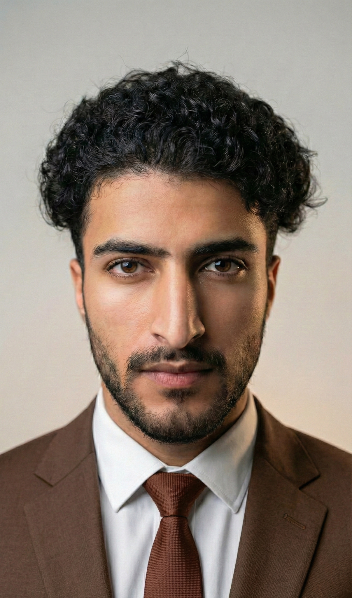

Solve before selling
Understand the actual problem first. Then build the thing worth paying for.
I look at the whole system — then build the parts that make a business impossible to ignore.

I learned what businesses feel like from close range — customers, people, operations, technology and the pressure to make things work. That ground-level perspective now informs how I approach strategy, marketing and growth.
Principles are only useful when they change what happens next.
Understand the actual problem first. Then build the thing worth paying for.
A result that only exists in one person’s head is not a system.
Start with what exists. Test reality before spending to manufacture attention.
Keep thinking until the useful version of an idea becomes clearer than the exciting version.
Different environments. Different constraints. The same instinct: understand the system, remove friction, make the experience work better.
The ground layer: guests, pressure, people, timing, service.
Technology through the customer: clarity, onboarding and problem solving.
Digital operations at real-business speed: POS, inventory and feedback.
Where customer experience and marketing started working as one system.
Full-spectrum management: people, operations, brand and growth.
A recruitment + marketing ecosystem built for international opportunity.
Taking business visibility, relationships and expansion across borders.
Websites, digital presence, social systems, business profiles and growth work — built around the actual business, not a template.
From a blank screen to a credible business presence: websites, profiles, social and the connective tissue between them.
Understand the audience. Remove the noise. Make the right message travel further.
Use AI to reduce friction in marketing, operations and repetitive work — while keeping human judgment in the loop.
HIRENIX is my venture. StructGuard is a professional collaboration where I lead international marketing, business relations and consulting. They are different environments — connected by the same growth mindset.
I want to use business, technology and AI to help companies become better — more visible, more efficient, more connected, more capable of growing across borders. And beyond companies, to push toward technology that makes human civilisation itself more capable.
A personal book shaped by uncertainty, failure, growth and the search for direction. It belongs here because the business story is only half of the person.
Read the story on LinkedIn ↗I like the part before the answer — where the business is real, the problem is still fuzzy, and there is something worth building.
Start a conversation ↗